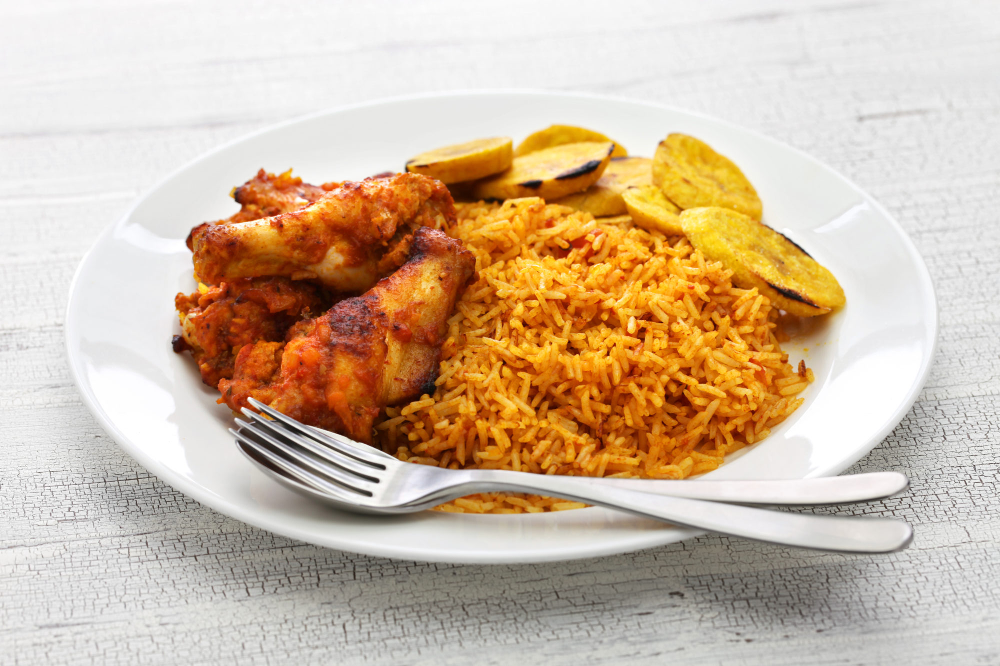

JOLLOF-RICE
JOLLO-RICE (West African )
Jollof rice is a vibrant and flavorful dish that hails from West Africa and is beloved across the continent. It is a one-pot rice dish cooked with a medley of aromatic ingredients and spices, resulting in a tantalizing blend of flavors. The base of Jollof rice is long-grain rice, cooked in a rich tomato-based sauce infused with onions, garlic, and a variety of spices such as paprika, cumin, and ginger. The dish often features colorful additions like diced tomatoes, bell peppers, and mixed vegetables, adding both visual appeal and a delightful crunch. Whether prepared with chicken, beef, or served as a vegetarian option, Jollof rice is a crowd-pleaser that brings people together with its comforting and satisfying taste.
With its bright red hues and irresistible aroma, Jollof rice is more than just a staple food—it is a cultural symbol. It is a dish that embodies the spirit of celebration, often enjoyed at weddings, festivals, and family gatherings. The communal aspect of Jollof rice is deeply ingrained in West African culture, where it is shared with loved ones as a symbol of hospitality and unity. Each mouthful of Jollof rice bursts with complex flavors, as the rice absorbs the rich tomato sauce and the spices mingle together. The result is a delectable combination of savory, slightly smoky, and subtly spicy notes that make Jollof rice a truly iconic and unforgettable dish.
Ingredients
- 2 cups long-grain rice 1 onion, finely chopped 2-3 tomatoes, diced 1 bell pepper, diced 2 cloves garlic, minced 1 Scotch bonnet pepper (optional, for heat) 2 tablespoons tomato paste 1 teaspoon ground paprika 1 teaspoon ground cumin 1 teaspoon ground ginger 1 teaspoon dried thyme 2 cups chicken or vegetable broth 1 cup mixed vegetables (carrots, peas, green beans) 2 tablespoons cooking oil Salt and pepper to taste
Recipe instructions
- Heat the oil in a large pot over medium heat. Add the onions and sauté until softened.
- Add the garlic, tomatoes, bell pepper, and Scotch bonnet pepper (if using). Cook for about 5 minutes until the tomatoes soften.
- Stir in the tomato paste, paprika, cumin, ginger, and thyme. Cook for another 2 minutes to allow the flavors to blend.
- Add the rice and stir well to coat it with the tomato mixture. Pour in the broth and bring to a boil.
- Reduce the heat to low, cover the pot, and let the rice simmer for about 20 minutes or until the liquid is absorbed and the rice is cooked.
- Stir in the mixed vegetables and season with salt and pepper to taste. Cover the pot again and cook for an additional 5 minutes until the vegetables are tender.
- Remove from heat and let the Jollof rice rest for a few minutes before fluffing it with a fork. Serve hot as a main dish or as a side dish with grilled chicken or fish.
Back to main page